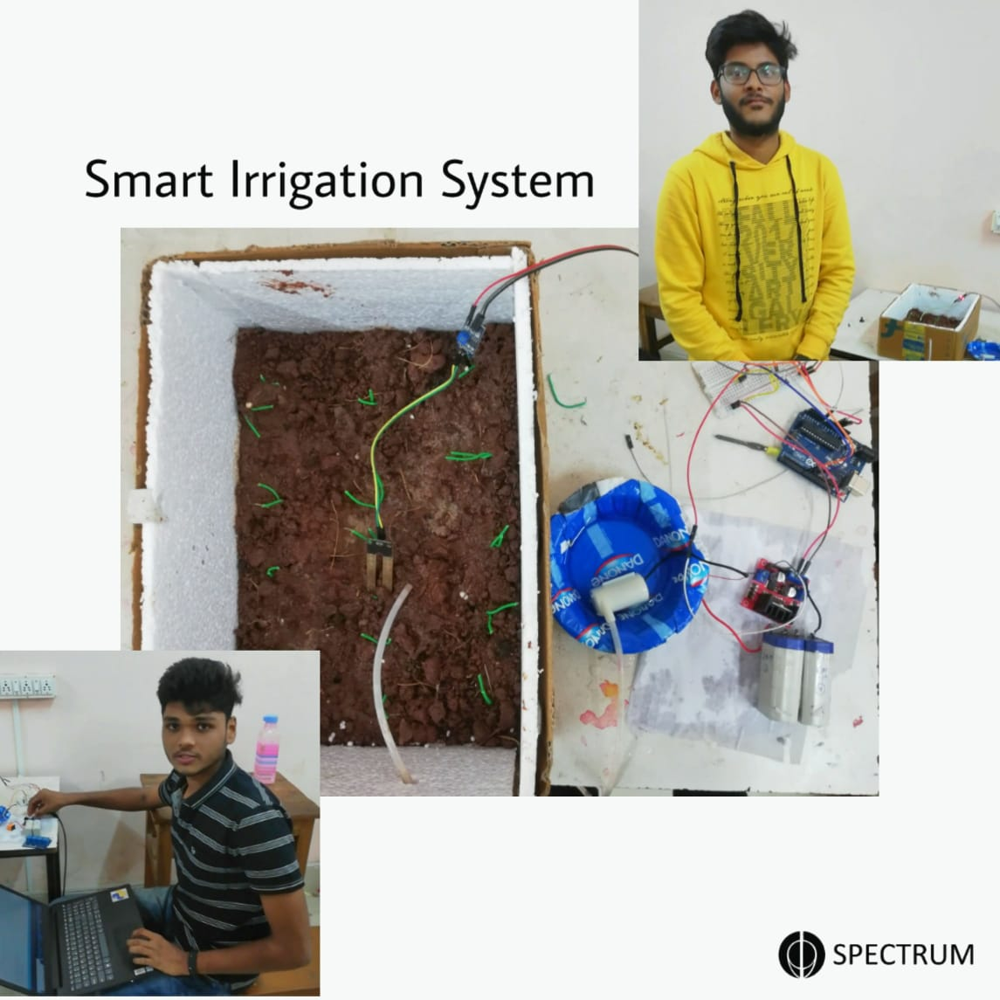

Living requires water. This project proposes an intelligent Irrigation system which describes how irrigation can be handled smartly using IOT. The objective of this system is to detect the moisture content of the soil and depending on it sprinkle water .This entire information will be sent to the user’s mobile phone. The Soil Moisture Sensor is used to measure the volumetric water content in the soil. This makes it ideal for performing experiments in plants by having constant information about the amount of water currently present in soil and accordingly providing water to the plants for proper nourishment. This includes constant checking of moisture content in soil and sending the readings to the android application. If the moisture content is less than the threshold value (which is pre-fed into the arduino board), a prompt message is sent to the device and automatically a sprinkler connected to the arduino will start sprinkling water on the affected area.
An automated irrigation system was developed to optimize water use for agricultural crops. The system has a distributed wireless network of soil-moisture placed in the root zone of the plants. In addition, a gateway unit handles sensor information, triggers actuators, and transmits data to an android application.
